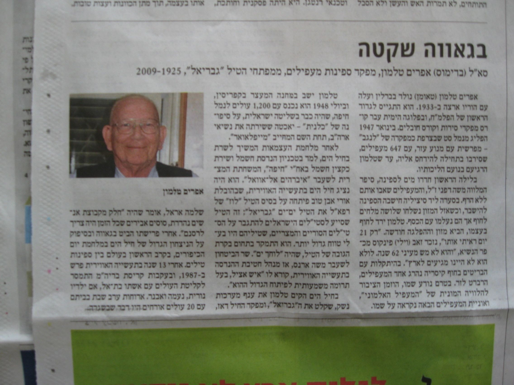

Home Page
“I knew him for two weeks, but remembered him for 62 years.”
— an immigrant who came on Efraim's ship to Israel in 1948 (quoted in an Israeli newspaper, Sept. 2009.)
Efraim [or: Ephraim] Talmon (1925–2009), the son of David and Anka, was a Palyam ship captain, a Commander in the Israeli navy, a devoted husband and family man, and a scholar. This web site is dedicated to his memory by his family. Click on the links above to learn about these and other facets of his life.
Thanks to all who sent pictures or contributed material, and to Doron Talmon and Meirav Zacharovitch in particular. Thanks to Uri Meretz of the Israeli Navy Association (link in Hebrew) for useful corrections and additions to this web site. Thanks to the Israeli Navy Association and the "Ha'apalah" Museum (link in Hebrew) for willingness to host links to this web site.
More pictures of Efraim and his family can be found here. Please email me if you have information about Efraim!

This web site is updated regularly. See below for the latest update's date.
Questions / comments? Contact: avital.pilpel@avitalpilpel.com.